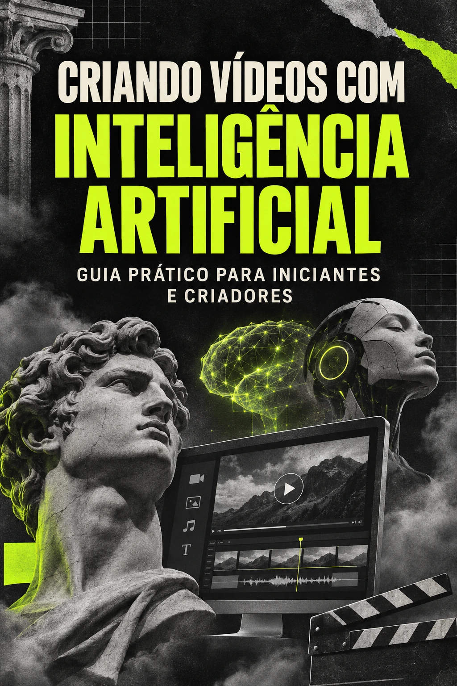

Do roteiro
ao Reel.
Transforme uma ideia em vídeo animado com inteligência artificial. Um passo a passo para planejar, produzir, narrar e exportar — mesmo sem saber programar.
BAIXAR O GUIA GRÁTISPDF • 7 páginas • Download direto e gratuito

Um processo que você pode repetir.
Um guia baseado na produção de um vídeo sobre círculo cromático, com instruções que podem ser adaptadas para diferentes temas.
Da ideia ao roteiro
Organize o tema, defina cenas, formato, duração e referências visuais antes de começar a produzir.
Animações com IA
Veja como usar o Codex com Remotion para criar e ajustar as cenas conversando em linguagem natural.
Voz, edição e MP4
Aprenda a inserir narração, sincronizar as cenas, revisar legendas e exportar o vídeo vertical.
Da primeira ideia ao vídeo pronto.
Prepare o projeto
Instale as ferramentas e organize sua pasta de trabalho.
Crie as cenas
Peça ao Codex para configurar e programar o vídeo no Remotion.
Dê voz à ideia
Gere a narração e acompanhe a prévia para ajustar a sincronização.
Publique
Revise o resultado e exporte um MP4 para Reels, Shorts ou TikTok.
O método usa diferentes ferramentas de IA e produção audiovisual (Codex, Remotion e ElevenLabs), além do computador. Não é necessário saber programar, mas alguns ajustes técnicos podem ser necessários.